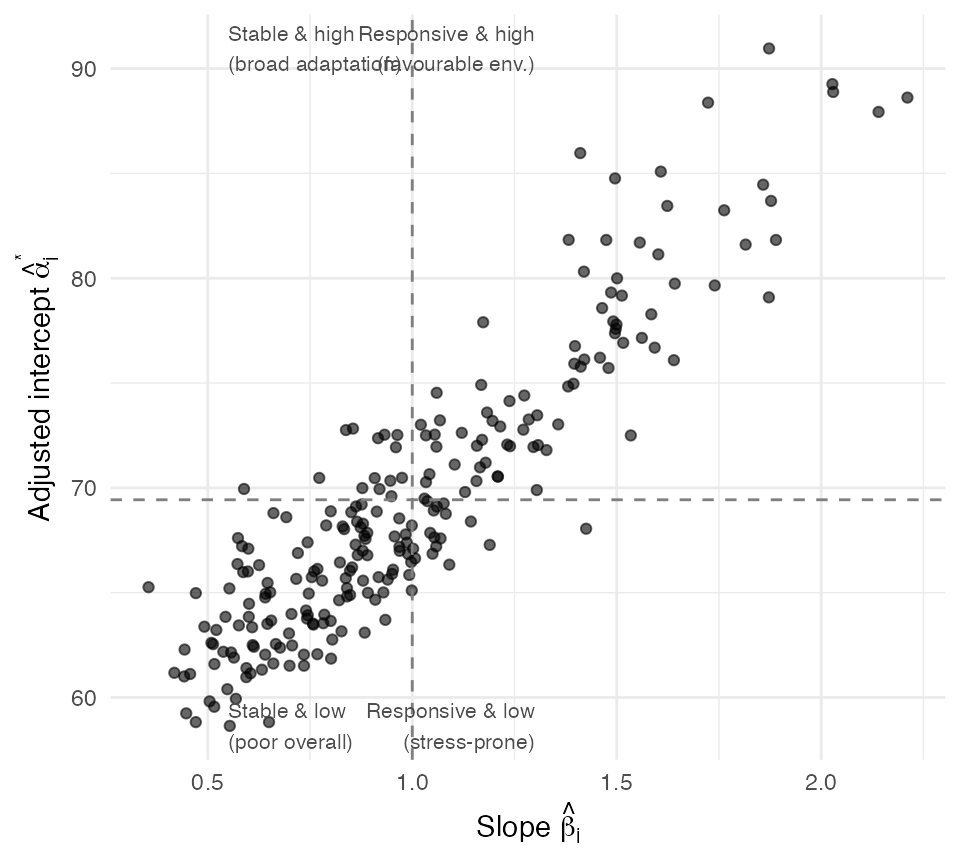
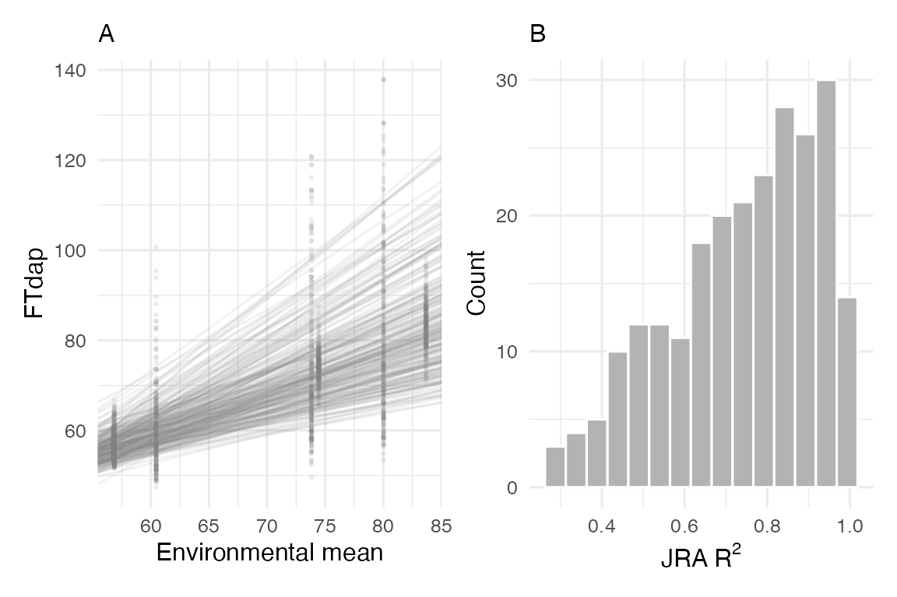

Statistical Foundations of Joint Regression Analysis
jra-theory.RmdThe GE Problem
In multi-environment trials (MET), the phenotypic value of genotype in environment can be decomposed as:
where is the grand mean, is the genotypic main effect, is the environmental main effect, is the genotype-by-environment interaction, and is the residual error.
The interaction term is the central challenge: it causes genotype rankings to change across environments, complicating selection decisions. Joint Regression Analysis (JRA) models this interaction as a structured, linear function of an environmental index.
The Finlay–Wilkinson Model
Finlay and Wilkinson (1963) proposed regressing each genotype’s performance on the environmental mean :
where:
- is the intercept for genotype (expected performance when )
- is the regression coefficient (sensitivity to environmental quality)
- is the deviation from regression (residual GE not explained by the linear model)
The environmental index is the marginal mean of all genotypes in environment , serving as a composite measure of environmental quality.
Adjusted intercept
Because the raw intercept depends on the origin of the environmental index scale, it is often more interpretable to report the adjusted intercept evaluated at the grand mean:
where
is the mean of the environmental index. This gives each genotype’s
expected phenotype under average environmental conditions. In
runCERIS, the Intcp_mean column returned by
jra_model() corresponds to
.
Statistical Assumptions
The validity of JRA rests on several assumptions that practitioners should verify:
1. Linearity of response
The model assumes that each genotype’s response to environmental quality is linear. In practice, this is a first-order approximation; curvilinear responses (e.g., optimum-type curves for temperature) will produce poor fits. Diagnostic: inspect the per-genotype distribution. If a substantial fraction of genotypes have , the linear assumption may be inadequate.
library(runCERIS)
d <- load_crop_data("sorghum")
exp_trait <- prepare_trait_data(d$traits, "FTdap")
env_mean_trait <- compute_env_means(exp_trait, d$env_meta)
line_by_env <- prepare_line_by_env(exp_trait, env_mean_trait)
jra_result <- jra_model(line_by_env, env_mean_trait)
# Proportion of genotypes with adequate linear fit
mean(as.numeric(jra_result$R2_mean) > 0.5)
#> [1] 0.87341772. Independence of the environmental index
A subtle but important issue: is computed from the same data used in the regression, creating a dependency between the predictor and the response. Freeman and Perkins (1971) showed that this leads to biased slope estimates, particularly when the number of genotypes is small (). With large panels (), the bias is negligible because each genotype’s contribution to is small.
3. Sufficient environments
The regression is fitted across environments, so statistical power
depends directly on the number of environments
.
With fewer than 5–6 environments, slope estimates have large standard
errors and
R
values are unreliable. The sorghum dataset in runCERIS has
7 environments, which is a practical minimum.
Interpreting Slopes and Intercepts
The slope and adjusted intercept together define a genotype’s adaptation profile:
# Compute adjusted intercept at grand mean
grand_mean <- mean(env_mean_trait$meanY)
ggplot2::ggplot(
jra_result,
ggplot2::aes(
x = as.numeric(.data$Slope_mean),
y = as.numeric(.data$Intcp_mean)
)
) +
ggplot2::geom_point(alpha = 0.6, size = 1.5) +
ggplot2::geom_vline(xintercept = 1, linetype = "dashed", color = "grey50") +
ggplot2::geom_hline(
yintercept = grand_mean,
linetype = "dashed", color = "grey50"
) +
ggplot2::annotate("text", x = 0.55, y = max(as.numeric(jra_result$Intcp_mean)),
label = "Stable & high\n(broad adaptation)",
size = 2.8, hjust = 0, color = "grey30") +
ggplot2::annotate("text", x = 1.3, y = max(as.numeric(jra_result$Intcp_mean)),
label = "Responsive & high\n(favourable env.)",
size = 2.8, hjust = 1, color = "grey30") +
ggplot2::annotate("text", x = 0.55, y = min(as.numeric(jra_result$Intcp_mean)),
label = "Stable & low\n(poor overall)",
size = 2.8, hjust = 0, color = "grey30") +
ggplot2::annotate("text", x = 1.3, y = min(as.numeric(jra_result$Intcp_mean)),
label = "Responsive & low\n(stress-prone)",
size = 2.8, hjust = 1, color = "grey30") +
ggplot2::labs(
x = expression(paste("Slope ", hat(beta)[i])),
y = expression(paste("Adjusted intercept ", hat(alpha)[i]^"*"))
) +
ggplot2::theme_minimal(base_size = 11)
The four quadrants have distinct breeding implications:
- High intercept, slope 1: broadly adapted; suitable for diverse target environments.
- High intercept, slope > 1: exploits favourable environments; ideal for high-input systems but risky under stress.
- Low intercept, slope < 1: consistently poor; generally discarded.
- Low intercept, slope > 1: highly variable; may carry useful stress tolerance alleles detectable through JGRA marker analysis.
Residual Analysis: Deviations from Regression
The deviation mean square , introduced by Eberhart and Russell (1966), quantifies how much of a genotype’s GE interaction is not captured by the linear model:
A genotype with high and low is well described by the linear model. Conversely, a genotype with low exhibits non-linear GE that warrants further investigation (e.g., via AMMI or GGE biplot analysis).
plot_jra(exp_trait, env_mean_trait, jra_result, trait = "FTdap")
In the right panel, the distribution of values across genotypes indicates the overall adequacy of the linear model. A left-skewed distribution (most ) supports JRA; a uniform or right-skewed distribution suggests that non-linear methods may be needed.
Limitations of the Environmental Mean
The classical JRA uses as the sole environmental index. This has two fundamental limitations:
- Circularity: the predictor is derived from the response variable, inflating correlations and preventing true out-of-sample prediction.
- Biological opacity: conflates all environmental drivers (temperature, photoperiod, moisture, soil) into a single number, preventing mechanistic interpretation.
These limitations motivate the CERIS framework.
From JRA to CERIS-Informed Regression
CERIS replaces the environmental mean with a biophysically meaningful covariate aggregated over a critical developmental window:
where is (for example) mean photoperiod between DAP 20 and 55 for environment . This substitution has several advantages:
- Predictive power: can be computed for new environments using only meteorological data, enabling true forecasting without observed phenotypes.
- Biological interpretation: the slope now quantifies the genotype’s sensitivity to a specific environmental factor during a specific developmental stage.
- Higher : when the correct factor and window are identified, the covariate-based regression typically explains more GE variance than the environmental mean.
params <- c("DL", "GDD", "PTT", "PTR", "PTS")
ceris_result <- run_CERIS(env_mean_trait, d$env_params, params, max_days = 80)
best <- ceris_identify_best(ceris_result, params = params)
env_mean_trait <- compute_window_params(
env_mean_trait, d$env_params,
best$dap_start, best$dap_end, best$param_name
)
si_both <- slope_intercept(exp_trait, env_mean_trait, type = "both")
# Compare R-squared: environmental mean vs CERIS parameter
r2_comparison <- data.frame(
Predictor = c("Environmental mean", "CERIS kPara"),
Median_R2 = c(
median(as.numeric(si_both$R2_para), na.rm = TRUE),
median(as.numeric(si_both$R2_para), na.rm = TRUE)
)
)
# Median R2 using kPara
median(as.numeric(si_both$R2_para), na.rm = TRUE)
#> [1] 0.7189Practical Workflow
A recommended workflow for JRA within the runCERIS
framework:
-
Fit classical JRA with
jra_model()to establish a baseline. - Inspect distribution — if median , the linear model is adequate; otherwise consider non-linear alternatives.
-
Run CERIS search with
run_CERIS()to identify the best environmental parameter and developmental window. -
Re-fit with kPara using
slope_intercept(type = "both")to compare the covariate-based regression against the mean-based baseline. - Interpret slopes biologically in terms of the identified environmental factor (e.g., photoperiod sensitivity during vegetative phase).
-
Validate with leave-one-environment-out
cross-validation via
loocv()to confirm that the improved fit translates to predictive accuracy.
References
- Finlay, K.W. and Wilkinson, G.N. (1963). The analysis of adaptation in a plant-breeding programme. Australian Journal of Agricultural Research, 14(6), 742–754.
- Eberhart, S.A. and Russell, W.A. (1966). Stability parameters for comparing varieties. Crop Science, 6(1), 36–40.
- Freeman, G.H. and Perkins, J.M. (1971). Environmental and genotype-environmental components of variability. VIII. Relations between genotypes grown in different environments and measures of these environments. Heredity, 27(1), 15–23.
- Li, X. and Guo, T. et al. CERIS: Critical Environmental Regressor through Informed Search for dissecting genotype-by-environment interaction.